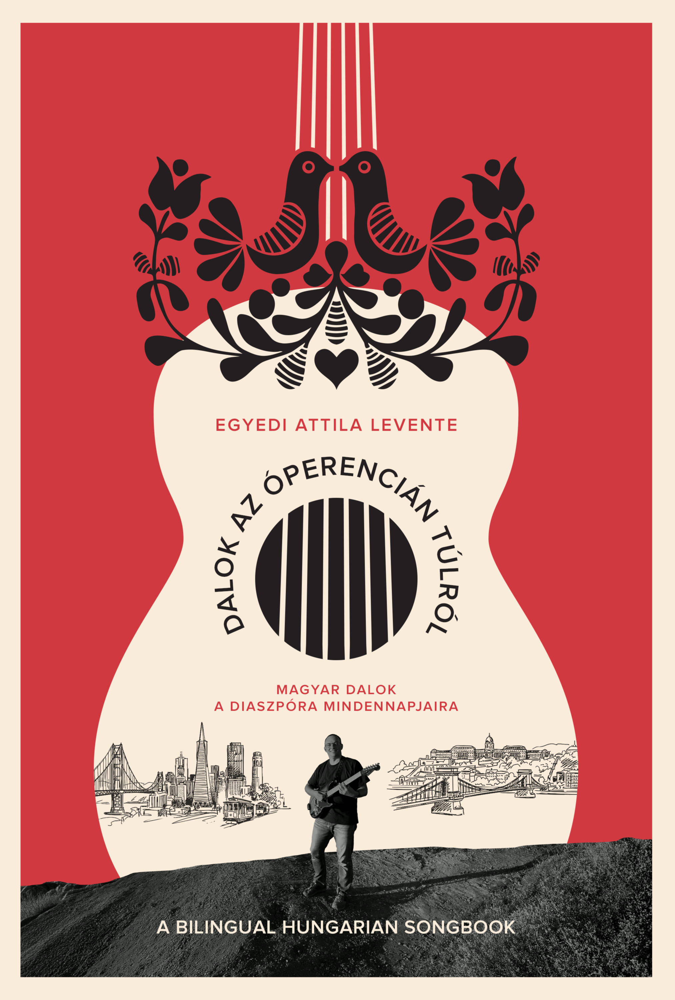

Dalok az Óperencián túlról
Kétnyelvű magyar daloskönyv ukulele-gyorstalpalóval – a diaszpóra mindennapjaira.
63 dal akkordkísérettel, minden ütem jelölve. Gyerekdalok, népdalok, ünnepek dalai – Kalotaszegtől Kaliforniáig.
Ajánlások
A magyar zene átível minden határon – nemzeti, kulturális, politikai, hangszeres, sőt még nyelvi korlátokon is.
— Magyar Kálmán
Ez a hiánypótló zenei tankönyv zseniális egyszerűséggel vezeti be az olvasót az ukulelejáték és a magyar nyelvű népi és más dalok világába.
— Keszei Etelka